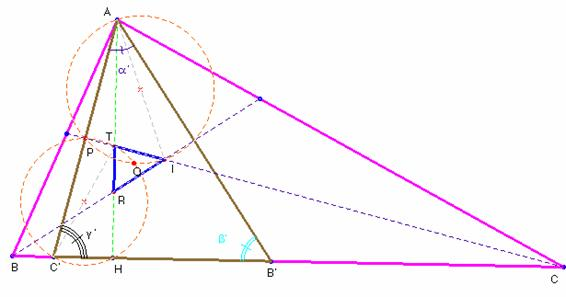
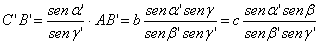
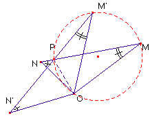
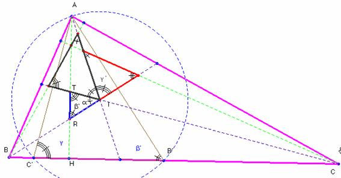

Problema nº 91.- Dado un triángulo ABC, a = BC,(lado mayor),b =AC, c = AB(no equilátero). Tomando el vértice A, por ejemplo, trazamos la altura desde A, y las bisectrices a los ángulos B y C, respectivamente hasta que corten a los lados opuestos.
Sobre su lado opuesto BC, llevamos los puntos B´, C´, tal que BB´= BA, y CC´=CA.
Probar que las tres rectas dadas, la altura y las dos bisectrices se cortan dos a dos para formar un triángulo (que puede ser un punto, en su caso límite) semejante al triángulo AB´C´.
Se determinará el centro y la razón de la semejanza.
Calcular los lados del triángulo AB´C´, en función de los lados del triángulo ABC.
La misma construcción se pueden hacer para los otros dos vértices.
¿Qué relación geométrica hay entre los tres triángulos así construidos?
Solución.-
Saturnino Campo Ruiz, profesor de Matemáticas del I.E.S. Fray Luis de León (Salamanca) (21 de abril de 2003)

Si la altura AH coincidiera con la bisectriz de A, no habría triángulo, pues este degeneraría en el punto I, incentro de ABC. Cuando no es así, llamando I al incentro, R y S a las intersecciones de cada bisectriz con la altura, se forma el triángulo IRT. Veamos que el triángulo IRT es semejante a AC’B’.
En el triángulo isósceles CAC’, la bisectriz CI del ángulo en C, es la mediatriz del segmento AC’. Por lo mismo la bisectriz BI resulta ser la mediatriz de AB’. Como, por otra parte, el lado TR está sobre la altura AH, tenemos que el triángulo IRT tiene sus lados perpendiculares a los del triángulo AC’B’; por tanto sus ángulos son iguales y son semejantes. Para calcular los ángulos nos fijamos en el triángulo isósceles CAC’. Áng.(ACC’)=(180-g)/2 =90-g/2=g’. En el BB’A, áng.(BB’A)=(180-b)/2=90-b/2=b’; finalmente, áng.(C’AB’)= 180-(b‘- g‘) = 90- a/2 = a’. (Hemos denominado por a, b y g a los ángulos del triángulo ABC).La correspondencia de puntos homólogos es: A à I; Bà’ R y Cà’ T y la de ángulos áng.(RIT) = a’; áng.( TRI) = b’; áng.(RTI) = g’; se han marcado en la figura con uno, dos y tres arcos respectivamente.
Vamos a calcular los lados del triángulo
AC’B’. Del triángulo ABC’, cuyos ángulos miden áng.(BAC’)=g’-b; áng.(AC’B)= 180-g‘, y b
para el tercer ángulo, aplicando el teorema de los senos se tiene: ,
de donde . Haciendo
lo mismo en el triángulo AB’C resulta , sin más
que permutar b y c, b y g. Por
último, en AC’B’, otra vez el teorema de los senos nos da 
Por el valor obtenido para los ángulos del triángulo AC’B’ y su semejante el TIR deducimos que para los triángulos construidos tomando las alturas desde B y desde C vamos a obtener la misma secuencia de ángulos a’; b’ y g’ en cada uno de ellos, pero en otro orden, en suma, todos estos triángulos son semejantes entre sí.

Veamos cómo determinar el centro de la semejanza. Según hemos visto, al tener sus lados perpendiculares, un giro de 90º del triángulo IRT, lo transformaría en otro de lados paralelos a los de AC’B’. La semejanza deja un único punto fijo O, el centro de la misma. Para determinarlo, si M y N se transforman por semejanza directa en M’y N’respectivamente, para el centro O (centro del giro y la homotecia en que podemos descomponer la semejanza) resulta que d =áng.(OMN) = áng.(OM’N’). Si P es la intersección de MN con M’N’, M y M’ están en el arco capaz de OP y ángulo d. Del mismo modo con el ángulo f = áng.(ONM)=áng.(ON’M’) encontramos que O, P, N y N’ son concíclicos. En resumen: O se obtiene como intersección de dos circunferencias.En nuestro caso concreto tenemos que determinar las circunferencias que pasan por los puntos P (intersección de CA’ y TI), C’ y T ( áng.(OC’A) = áng.(OTI)). De áng.(OAC’)=áng.(OIT) deducimos que I, P y A, están en la misma circunferencia. La intersección de estas circunferencias son los puntos P y O (el centro de semejanza).

Para calcular la razón de semejanza dibujamos antes los otros dos triángulos que se forman por el mismo sistema que el IRT. Nos fijamos en el triángulo ARI, cuyos ángulos son áng.(RAI)= g’- b’; áng.(ARI )= b’ y áng.(RIA)= a’+ b’. El teorema de los senos aplicado aquí nos da . Por otra parte, IA es el radio de la circunferencia circunscrita al triángulo AC’B’, y este valor es, 2·IA = (g’ es el ángulo opuesto al lado AB’). Sustituyendo IA y operando resulta finalmente:k = razón de semejanza = .